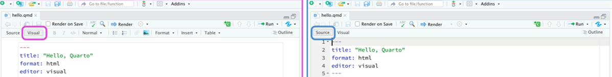
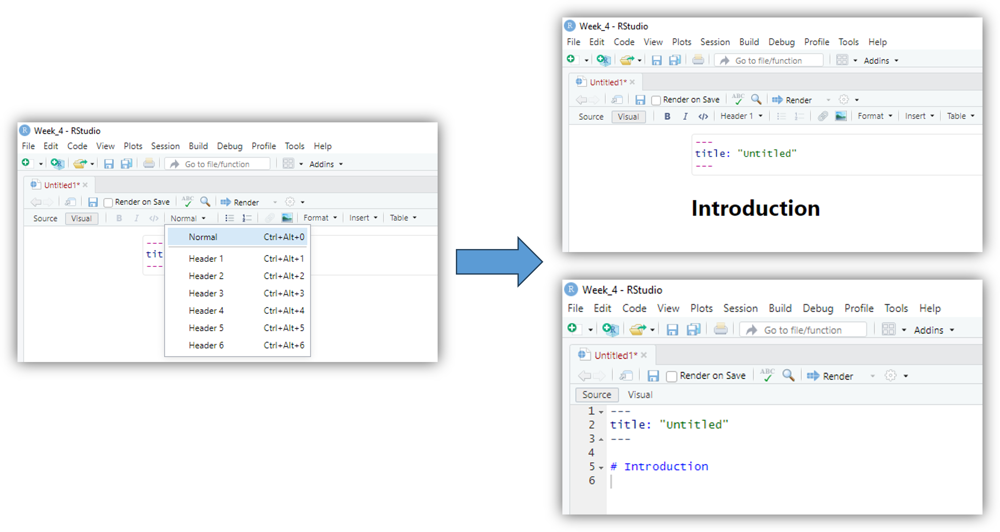
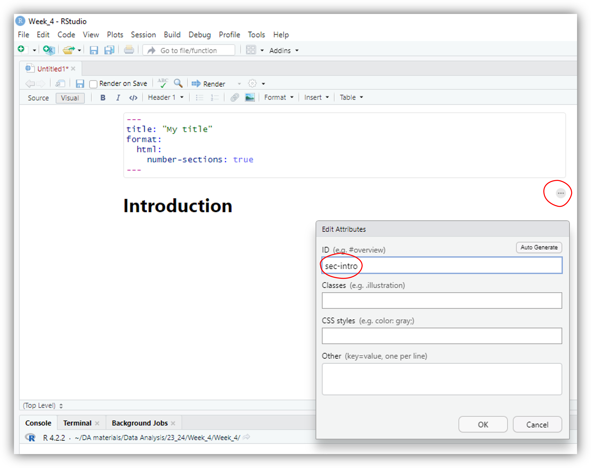
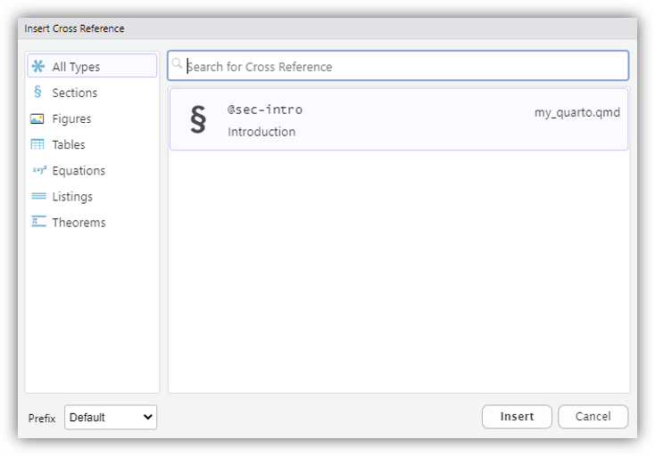
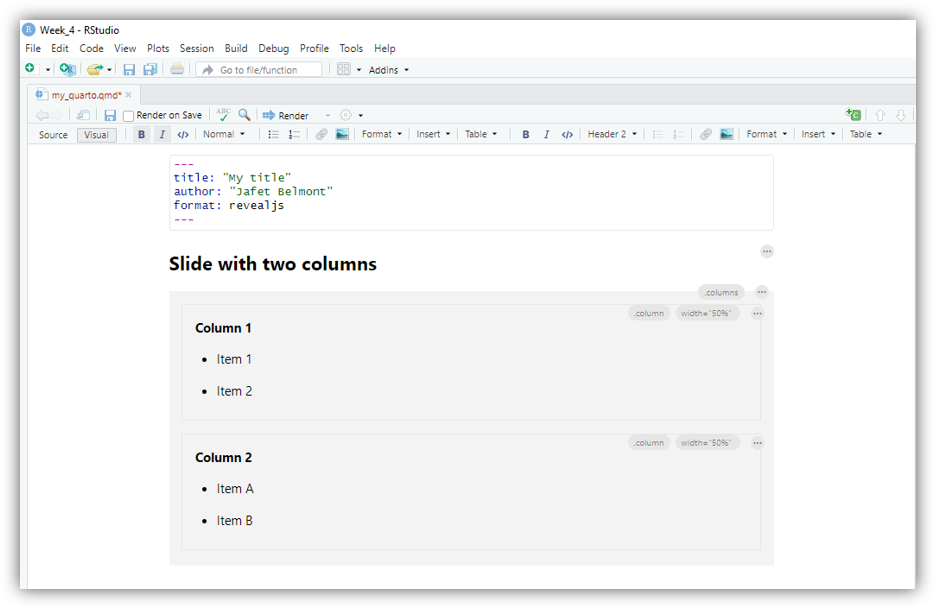
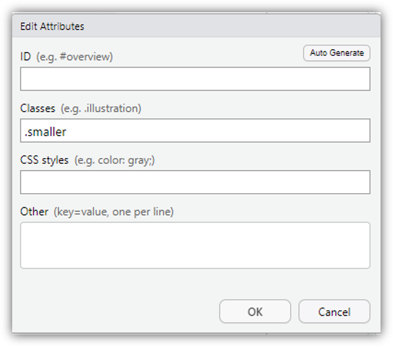

Code
```{r}
#| message: false
#| warning: false
library(gapminder)
library(skimr)
library(ggplot2)
```This week we will take what we have learned in previous weeks and produce a report using Quarto . Quarto is a multi-language system that allows reports and presentation to be created within R, thus allowing for R code and output to be easily embedded within a report, a presentation or even a Blog!. Hence, all of the R code and plots obtained from an analysis are contained within a single file.
Under Week 5 on Moodle there is an Example Report produced using Quarto relating to fitting a regression model using one numerical explanatory variable that was done in Week 4. The corresponding Quarto .qmd file can also be downloaded and opened in R to see how the document was produced (press the Render button to create the HTML/PDF version). It is advised to have this document open within RStudio while working through the remaining sections in order to see examples put into practice.
The following sections will take you through the different steps required to produce the Example Report on Moodle. For creating a new Quarto file from scratch see Section 1.1, otherwise move onto Section 2.
If you want to create a new R Markdown document from scratch within RStudio you can go to:
File -> New File -> Quarto Document...
This will open the following window within RStudio:

Before creating your first Quarto document, be sure that you have the latest RStudio version installed.
From here select Document and the Default Output Format as PDF or HTML. Give your document a title and select OK. This will open within RStudio an empty .qmd file.
You can download this template containing simple instructions on how to do some basic stuff using Quarto . To see what the HTML/PDF of the template document looks like click on the 
Render button at the top of the document window.
The title of the document can be found at the top of the .qmd file within its preamble, which is shown below. When titling your document, ensure the title is within inverted commas.
---
title: "Example Report"
---A Quarto document can be edited in the two modes of the RStudio editor: visual (on the left) and source (on the right). The visual mode offers a more friendly interface for editing you document (it includes a toolbar for quick edit options), while the source mode allows you to see and edit the underlying R markdown text code.

You can switch between these two modes at anytime. Will now cover different aspects of building a Quarto document and provide the instructions on how to do this using either the visual editor or the source mode.
Under the source mode, sections within a Quarto document are created using #. For example, # Introduction will create a section titled Introduction. Alternatively, if you use the visual mode, you can include a new section by selecting a proper heading under the block-format display of the toolbar as follows:

If you want section to be numbered you can set number_sections: true within the preamble of the document:
---
title: "My title"
number-sections: true
---Each section can be assigned labels so that they can be referred to within the text. To reference a section, add a #sec- identifier to any heading. For example, to give our Introduction section a label we simply add the label {#sec-intro} to the section title as follows:
# Introduction {#sec-intro}where sec-intro is the name chosen for this particular section. For the visual model you can click on the edit attributes settings  (right hand side of the section heading) and write the label you want on the ID box of the pop-up window:
(right hand side of the section heading) and write the label you want on the ID box of the pop-up window:

It is a good idea to label your sections appropriately so that it is easy to refer to them later. Note that it is important to add the sec- prefix in order for cross-referencing to work properly.
The section can now be referred to within the text of the document using the @sec- command. That is
Section @sec-intro ...will produce
Section 1 ...where the 1 is a clickable hyperlink that will take you to the beginning of that section within the document. If you are using the visual mode, you can easily include cross-references by clicking on Insert▾➠ Cross Reference
Note that for section labels to appear on the references list, you must save your document first (click on File ➠ Save as… and save your document with a proper name). Then all the labels (i.e., labels of sections, figures, equations, etc.) will appear on the Insert Cross Reference pop up window. Then simply click on Insert▾ to add the selected reference to your document.

Subsections can be added to a document in a similar fashion using either ## (such that ## Subsection {#sec-sub} will create a subsection with the label sec-sub and title Subsection) or by clicking on the Block format ➠ Header X menu on the toolbar on the visual mode.
Code chunks allow for R code to be embedded within a document. Not only can the code be easily included within a document, the code can also be evaluated. Hence, you can produce an entire report based on an analysis that is contained within a single file instead of having separate files containing your R code, plot images and comments.
R Code can be evaluated directly on the Quarto document or in the R console (the latter would be similar to run your code from an R script). To select where you want your code to be evaluated click on the setting options  (next to the Render button
(next to the Render button  ) and choose between
) and choose between Chunk Output Inline (default) if you want your code to be evaluated within the Quarto document or Chunk Output in Console to evaluate your code directly on the R console. If you select the latter, the following options will be added to the document preamble:
editor_options:
chunk_output_type: inlineTo add an R Code Chunk you can simply click on the  symbol (or using keyboard shortcut
symbol (or using keyboard shortcut cmd+alt+i or ctrl+alt+i for windows users) on either visual or source modes.
R code chunks are identified with {r} with multiple (optional) chunk options which we can access by typing #| at the beginning of the line.

If you are in the source mode the R chunks will appear as follow:
```{r}
```Some of the most common arguments you will use in your R Chunks are:
For example, let’s say we wanted to select the score and bty_avg variables from the evals data set to be used later, we can do that using the following code chunk:
{r}
#| echo: false
library(tidyverse)
library(moderndive)
evals.scores <- evals |>
select(score, bty_avg)Setting echo: false will tell the R to evaluate the code while hiding the R chunk from the main document. In this example, we will store the subsetted data set as the object evals.scores so that it can be used later . If you want to embed the code within the Quarto document then you would simply set echo: true.
R chunk options are case sensitive! so echo: TRUE or echo: FALSE won’t work! You can use R Studio autocomplete feature the see the available options by pressing the tab key.
Note that by default Quarto will set echo: true . Alternatively, you can edit the Quarto preamble and change the global output options to show or hide all R chunks. You can do this within the execute options as follows (you can manually override this by changing the echo option in each individual chunk) :
---
title: "My title"
number-sections: true
execute:
echo: false
---You need to be very careful with the indentation if you decide to change the global settings of Quarto preamble!
Lets look at another example:
```{r}
#| message: false
#| warning: false
library(gapminder)
library(skimr)
library(ggplot2)
```In this case, we set warning and message to false to indicate that we want to suppress any warnings or messages (e.g., the ones that you usually get when loading R packages). Another useful options is eval. If we set eval: false then we indicate that we don’t want the chunk output to be included in the rendered document (this is useful for example if we just want to show our R code without rendering its output):
```{r}
#| eval: false
ggplot(data=evals.scores,aes(y=score,x=bty_avg)) +
geom_point()
```Note that we can still run the code in each individual chunk (even if we set eval: false) by clicking the run chunk bottom . The code will be evaluated in either your
. The code will be evaluated in either your .qmd file or in the console depending on the Chunk output settings (this mean that can test your code in R but its output won;t be rendered in the final dicument).
Additional arguments can be passed to code chunks other than those displayed above. The most useful ones other than those relate to figure sizing and positioning and are discussed in the upcoming sections.
R code can be included within text by enclosing the code with `r `. This allows for expressions to be evaluated by R and not be hardwired by the user. For example, if you wanted to convey the number of observations within evals.scores then we can enclose nrow(evals.scores) within `r ` to obtain the number of observations, rather than hardwiring 463 into the text. This can help to prevent potential human error when presenting information. It can also help with consistency and ease-of-use, since n = nrow(evals.scores) could be stored as an R object and referred to whenever necessary within the text using inline R code.
There are several ways to produce tables in Quarto . Here, a couple of different approaches will be presented. The first approach uses the gt() function from the gt package and essentially puts a wrapper around the tables produced in R in order to make them more visually appealing within the Quarto document. Here we will just cover the basics, but if you want to learn more about creating eye-catching tables with gt visit here.
Let’s say we wanted to create a table of the first 5 rows of the iris data from the datasets library. We can create the table using the gt function as follows:
| Sepal.Length | Sepal.Width | Petal.Length | Petal.Width | Species |
|---|---|---|---|---|
| 5.1 | 3.5 | 1.4 | 0.2 | setosa |
| 4.9 | 3.0 | 1.4 | 0.2 | setosa |
| 4.7 | 3.2 | 1.3 | 0.2 | setosa |
| 4.6 | 3.1 | 1.5 | 0.2 | setosa |
| 5.0 | 3.6 | 1.4 | 0.2 | setosa |
Lets customize this table a bit by (1) adding a table caption and number (2) modifying the labels of the columns and (3) create a grouping structure for the petals and sepals width and length columns:
```{r}
#| label: tbl-iris
#| tbl-cap: First five entries of the iris Data set
iris |>
slice_head(n=5) |>
gt() |>
fmt_number(decimals=2) |>
tab_spanner(
label = "Sepals",
columns = c(Sepal.Length, Sepal.Width)
) |>
tab_spanner(
label = "Petals",
columns = c(Petal.Length, Petal.Width)
) |>
cols_label(
Sepal.Length = html("Length (cm)"),
Sepal.Width = html("Width (cm)"),
Petal.Length = html("Length (cm)"),
Petal.Width = html("Width (cm)")
)
```| Sepals | Petals | Species | ||
|---|---|---|---|---|
| Length (cm) | Width (cm) | Length (cm) | Width (cm) | |
| 5.10 | 3.50 | 1.40 | 0.20 | setosa |
| 4.90 | 3.00 | 1.40 | 0.20 | setosa |
| 4.70 | 3.20 | 1.30 | 0.20 | setosa |
| 4.60 | 3.10 | 1.50 | 0.20 | setosa |
| 5.00 | 3.60 | 1.40 | 0.20 | setosa |
The first thing we’ve done is to add a table label using label: tbl-planets .This will allow us to add cross-reference in the text (Remember to use the tbl- prefix to make them cross-referenceable). For example we can write @tbl-iris in our document to reference and create an hyperlink directed to the Table 1 (you can also use the tool bar Insert▾➠ Cross Reference to do this). Then, the option tbl-cap: allow us to add caption to the table. Finally, we set the number of decimals to 2 with the fmt_number function and then we use the tab_spanner and cols_label functions to change some features of our gt table.
Tables can also be produced ‘by hand’ in Quarto . For example, the table above corresponding to the first 5 rows of the iris data can be produced by hand by clicking on the Table option in the toolbar (next to Insert▾ while using the visual mode) and selecting the number of rows and columns.

We can manually fill each entry to produce the following table:
| Sepal Length | Sepal Width | Petal Length | Petal Width | Species |
|---|---|---|---|---|
| 5.1 | 3.5 | 1.4 | 0.2 | setosa |
| 4.9 | 3.0 | 1.4 | 0.2 | setosa |
| 4.7 | 3.2 | 1.3 | 0.2 | setosa |
| 4.6 | 3.1 | 1.5 | 0.2 | setosa |
| 5.0 | 3.6 | 1.4 | 0.2 | setosa |
If you then go to the source mode you will see the raw markdown code that produced this table:
| Sepal Length | Sepal Width | Petal Length | Petal Width | Species |
|:------------:|:-----------:|:------------:|:-----------:|--------:|
| 5.1 | 3.5 | 1.4 | 0.2 | setosa |
| 4.9 | 3.0 | 1.4 | 0.2 | setosa |
| 4.7 | 3.2 | 1.3 | 0.2 | setosa |
| 4.6 | 3.1 | 1.5 | 0.2 | setosa |
| 5.0 | 3.6 | 1.4 | 0.2 | setosa |
: The fist 5 rows of the iris data. {#tbl-iris}In here, the vertical separators | are used between columns, while --- is placed below table/column headings. Alignment of the columns is done using colons, that is, for left alignment put :---, for right alignment put ---:, and for centred alignment put :---:. For these sorts of tables, you can add a caption below the table and then include a #tbl- label in braces at the end of the caption for cross-referencing.
You can read more about authoring Quarto tables here.
Including plots and figures within a Quarto document is straightforward. To include an external figure you can use the visual mode tool bar and click on Insert▾➠ Figure/Image... and then browse to the path where you image is, or alternatively write the url from which the image should be obtained. The pop-up windows allows you also to write a caption and also to modify the image alignment with respect the main text.

If you want to add cross-referencing you can add the fig- prefix in the attributes tab of the pop-up windows:

The source code would then look something like:
{#fig-image1}Very often we would like to use the R plots generated from your analysis instead of using external figures. To achieve this, the R code for the plot is simply included within a code chunk including additional arguments for plot size and positioning. For example, to include the scatterplot of teaching and beauty:
```{r}
#| label: fig-scatterplot1
#| fig-cap: Relationship between teaching and beauty scores. The best-fitting line has been superimposed.
#| fig-width: 4
#| fig-height: 5
#| fig-align: center
#| message: false
ggplot(evals.scores, aes(x = bty_avg, y = score)) +
geom_point() +
labs(x = "Beauty Score", y = "Teaching Score") +
geom_smooth(method = "lm", se = FALSE)
```
Here, we set the chunk label to include the fig- prefix so we can cross-reference using the @ prefix. For example @fig-scatterplot1 will create a hyperlink to Figure 1. Then we added a figure caption using the fig-cap option. For size and positioning of the figure we can include:
fig.width: an integer value denoting the width of the figure;fig.height: an integer value denoting the height of the figure;fig.align: the alignment of the figure within the body of the documentYou can read more about authoring Quarto tables here.
Mathematics and statistical equations can be presented nicely within a Quarto document. For example, the following equation referring to a linear regression model:
\[y_i = \alpha + \beta x_i + \epsilon_i, ~~~~ \epsilon_i \sim N(0, \sigma^2),\] is done using the following:
$$ y_i = \alpha + \beta x_i + \epsilon_i, ~~~~~ \``epsilon_i``\sim N(0, \sigma^2), $$
That is, we use:
$$ signs to produce mathematics which is centred, and a single $ to include mathematics within a sentence or paragraph; in visual mode you can go to Insert ▾ ➠ LaTeX Math ▸ and chose between Inlay Math or Display Math._ and ^ are used for subscripts and superscripts, respectively;\ and the letters name, i.e. \alpha gives \(\alpha\); and~) are used to put spacing between notation.If you have a categorical variable then you would write it using an indicator function. For example, if we have gender as a categorical variable, where females are the baseline category, then we could write our model as follows:
\[y_i = \alpha + \beta_{\mbox{Male}} \cdot \mathbb{I}_{\mbox{Male}}(x),\]
$$y_i = \alpha + \beta_{\mbox{Male}} \cdot \mathbb{I}_{\mbox{Male}}(x),$$where \(\mathbb{I}_{\mbox{Male}}(x)\) $\mathbb{I}_{\mbox{Male}}(x)$ is an indicator function such that
\[\mathbb{I}_{\mbox{Male}}(x)=\left\{ \begin{array}{ll} 1 ~~~ \mbox{if the gender of} ~ x \mbox{th observation is Male},\\ 0 ~~~ \mbox{Otherwise}.\\ \end{array} \right.\]
$$\mathbb{I}_{\mbox{Male}}(x)=\left\{
\begin{array}{ll}
1 ~~~ \mbox{if Gender of} ~ x \mbox{th observation is Male},\\
0 ~~~ \mbox{Otherwise}.\\
\end{array}
\right.$$For additional tricks inserting mathematics into documents see here.
Another great feature of Quarto is that it allows you to create presentations and supports a variety of formats such as html, power point and beamer. Today we will focus on creating an html presentation (which can be also printed as a pdf).
Creating an html presentation is as easy as setting the output format to revealjs:
---
title: "My title"
author: "Jafet Belmont"
format: revealjs
---
This will create a title slide that includes the provided title and author. (you can remove any of these options if you the author or title page to be removed). Now we will switch to the visual mode. You will notice that a new set of options have now appeared:

This new tab will allow us to interact with the different features of our presentation. Lets begin by creating some slides. Slides in Quarto are delineated using level 1 and 2 headings:
---
title: "My title"
author: "Jafet Belmont"
format: revealjs
---
# Topic 1
## Slide 1.1
# Topic 2
## Slide 2.1In the example above we use level 1 headings for creating a new sections and level 2 heading for defining the new slides. Alternatively we can use horizontal rules to create the slides as follows (on visual mode click on Insert▾ ➠ Horizontal Rule):
---
title: "My title"
author: "Jafet Belmont"
format: revealjs
---
Content of slide 1
---
Content of slide 2
---You can add bullet and numbered lists to each slide as follows (on visual mode click on or  for adding bullet or numbered lists respectively):
for adding bullet or numbered lists respectively):
---
title: "My title"
author: "Jafet Belmont"
format: revealjs
---
## Slide 1
1. Item 1
2. Item 2
## Slide 2
- Bullet 1
- Bullet 1.1
- Bullet 1.2
- Bulet 2
- Bullet 2.1
- Bullet 2.2
Notice that indentation allow us to create a hierarchical structure within our lists of items. You can modify some of the option of the list by clicking the  button on the right side of it. This will open a pop-up window where you can modify some of its attributes. For example, you can ask Quarto to display each item one by one as you move forward through the slides:
button on the right side of it. This will open a pop-up window where you can modify some of its attributes. For example, you can ask Quarto to display each item one by one as you move forward through the slides:

If you want to arrange the content of you slide into different columns you can insert a multiple column output. To do this switch to visual mode and click on Insert▾ ➠ Slide Columns). You can then fill each column:

Sometimes the text size in your slide might be too large to fit in your slide and you would like to make it smaller. You can then use the .smaller class to use a smaller typeface so that more text fits on the slide.
---
title: "My title"
author: "Jafet Belmont"
format: revealjs
---
## Slide with small text {.smaller}
1. Item 1
2. Item 2
If you are on the visual model, click on the slide settings  and then type
and then type .smaller on the class box:

Note that ideally you slides should not contain too much text and thus this is just a quick way around if you feel that you need a bit of extra space in your slide.
R code can be embedded in any slides by including a R chunk in the same way as we did before. However, sometimes we would like to arrange the code output to be display in a “tidy” manner within the slide. To achieve this we can use the output-location: argument which has the following options:
column: Display output in a column adjacent to the code
column-fragment: Display output in a column adjacent to the code and delay showing it until its explicitly stepped through by advancing the slides.
fragment: Delay the output dipslay until it is explicitly stepped through by advancing the slides.
slide: Display output on the subsequent slide.
For example, the source code for a slide containing an R code would look something like this:
---
title: "My title"
author: "Jafet Belmont"
format: revealjs
---
## Slide with R Code {.smaller}
::: {.cell output-location='column-fragment'}
```{.r .cell-code}
ggplot(evals.scores, aes(x = bty_avg, y = score)) +
geom_point() +
labs(x = "Beauty Score", y = "Teaching Score") +
geom_smooth(method = "lm", se = FALSE)
```
::: {.cell-output .cell-output-stderr}
```
`geom_smooth()` using formula = 'y ~ x'
```
:::
::: {.cell-output-display}
{width=672}
:::
:::You can render a Quarto document or a presentation by clicking the Render button  .
.
Note that if you are working on a Quarto document you can also compile a PDF version of it by clicking on 
Render ▾ ➠
Render PDF. However, if you are working on a Quarto presentation while using revealjs format then you need to render the presentation first in html and then export it as pdf by following these instructions.
When you render a Quarto document, the R code in you chunks is executed by the knitr R-package and a new markdown (.md) document is then created. This file includes all of your code and its output. pandoc then processes this markdown to create the finished format. The Render button encapsulates these actions and executes them in the right order for you.